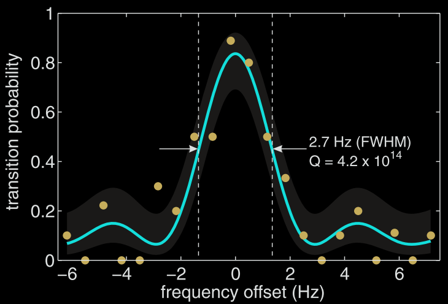
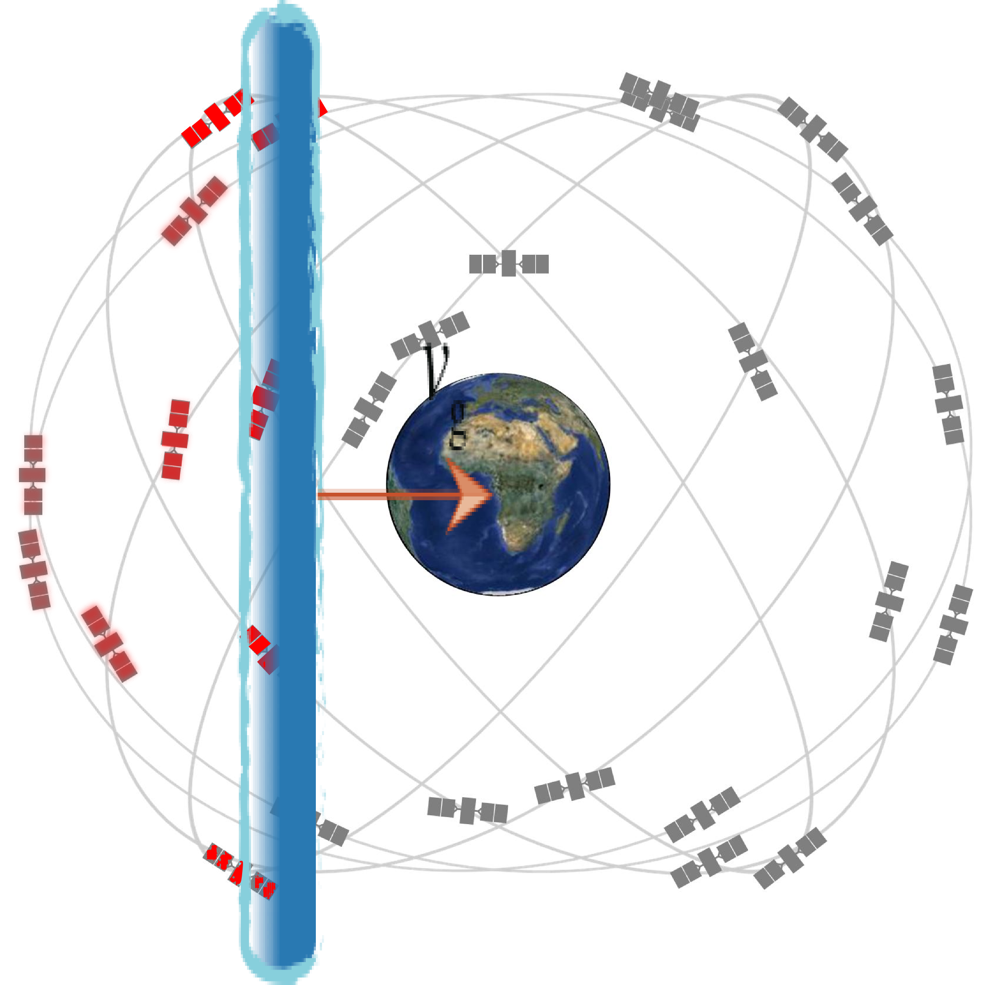
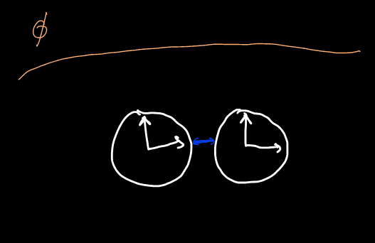
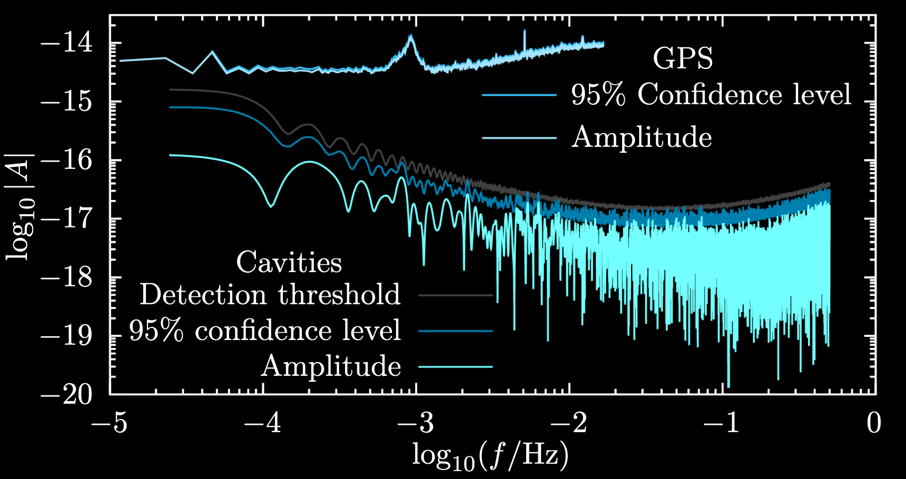
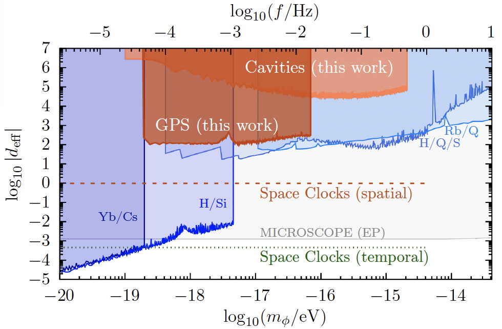
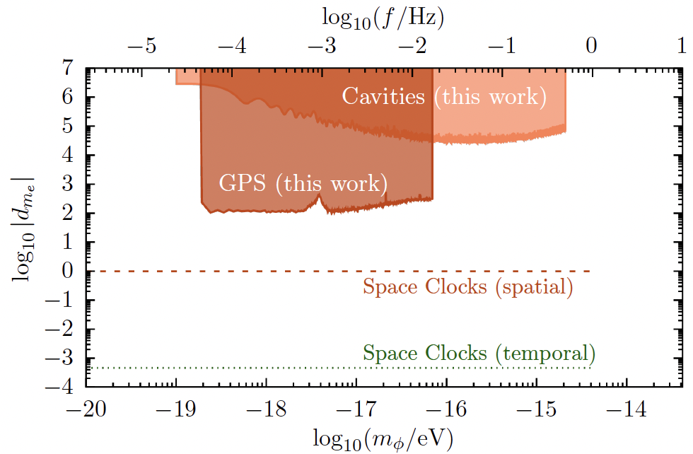

<h1> Ultralight Dark Matter Search with Space-Time Separated Atomic Clocks and Cavities </h1> <br> <h3> <it>AIP Congress, Melbourne, December 2024</it> </h3> <br> <h4> * Melina Filzinger, Ashlee Caddell, Dhruv Jani, Martin Steinel, Leo Giani, Nils Huntemann, BMR, [arXiv:2312.13723](https://arxiv.org/abs/2312.13723) * Savalle _et al._, [Phys. Rev. Lett. **126**, 051301 (2021)](https://journals.aps.org/prl/abstract/10.1103/PhysRevLett.126.051301) [[arXiv:2006.07055](http://arxiv.org/abs/2006.07055)] * BMR _et al._, [New J. Phys. **22**, 093010 (2020)](https://iopscience.iop.org/article/10.1088/1367-2630/abaace) [[arXiv:1907.02661](http://arxiv.org/abs/1907.02661)] * BMR, Blewitt, Dailey, Murphy, Pospelov, Rollings, Sherman, Williams, Derevianko, [Nature Comms. **8**, 1195 (2017)](https://www.nature.com/articles/s41467-017-01440-4) </h4> <div class="r-stretch"></div> ### Benjamin M. Roberts <br> School of Mathematics and Physics, University of Queensland, Australia <br><br> * Slides [broberts.io/talks](https://broberts.io/talks) <br> <br> <img src="img/uq-logo.svg" width="25%"> <!-- --> <!-- Supported by Autralian Research Council --> Supported by: ARC and <!-- <img src="https://www.bqx.com.au/wp-content/uploads/2022/10/BXI_Logo-768x233.png" width="30%"> --> <br><br>
# Dark Matter: What we know <br> <h3> There's lots of it</h3> <h3> It gravitationally clusters in halos around galaxies</h3> <h4> (really, galaxies gravitationally cluster around DM)</h4> <div style="text-align: left; float: left; width: 50%" > <br><br> <h2>Very strong evidence:</h2> <br> <h3>• Rotation curves, gravitational lensing, CMB </h3> <br> <h3>• Also: large scale structure, BAO etc. </h3> <br> <h3>• It's not strange for particles to not interact with light (e.g., neutrinos)</h3> <br> <br> <h3 >• ΛCDM model works extremely well <br> • Ωc = 0.2589(57) [Planck] </h3> <!-- <h3 class="fragment">• (Just need to work out the Λ and CDM parts)</h3> --> </div> <div style="text-align: center; float: right; width: 50%"> <br><br><br><br> <img src="img/dm-pie.jpg" width="55%"><br> </div>
# Dark Matter: What we don't know <br> <div class="fragment" data-fragment-index="0"> <h2> ... everything else</h2> </div> <br> <div class="r-stack"> <img class="fragment" data-fragment-index="1" src="img/DM_masses2.png" width="80%"> <img class="fragment" data-fragment-index="3" src="img/DM_masses3.png" width="80%"> </div> <div class="fragment" data-fragment-index="1"> <font size="3">US "Cosmic Visions" report [arXiv:1707.04591]</font> </div> <br> <br> <div class="fragment" data-fragment-index="1"> <h3>• Possible mass range: 90 orders of magnitude!</h3> </div> <div class="fragment" data-fragment-index="2"> <h3>• Fundamental particle: 50 orders (de Broglie to Planck)</h3> </div> <br> <div class="fragment"> <h3> • Vast majority of focus on WIMPs, but field is very wide</h3> </div>
# En*light*ening the search for Dark Matter? ## Atomic Physics! <br> <div style="text-align: center; float: left; width: 60%"> <div class="fragment" data-fragment-index="0" style="text-align: left;" data-markdown> <h2> Mass drops below nuclear mass:</h2> <h3> • No nuclear recoils • Instead: electron recoils + ionisation <font color="pink">• See Ashlee Caddell talk</font></h3> </div> <br> <div class="fragment" data-fragment-index="1" style="text-align: left;" data-markdown> <h2> Mass drops below electron mass:</h2> <h3> • No electron recoils<br> • Instead: absorption (dark photoelectric effect)</h3> </div> <br> <div class="fragment" data-fragment-index="2" style="text-align: left;" data-markdown> <h2> Mass drops below eV:</h2> <h3> • Classical DM field • Quantum sensing (atomic clocks)</h3> </div> <br> </div> <div style="text-align: center; float: right; width: 40%"> <br> <img class="fragment" data-fragment-index="0" src="img/atom.png" width="40%"> <br><br> <div class="r-stack"> <div class="fragment" data-fragment-index="2"> <img src="img/laser-JILA.jpg" width="90%"><br> <font size="3">[JILA]</font> </div> <!-- <div class="fragment" data-fragment-index="3"> <img src="img/Ye_UCBolder-SrLattice.jpg" width="80%"><br> <font size="3">[Ye/UCBolder]</font> </div> --> </div> </div>
# Ultralight Dark Matter <br><br> $$ \Huge {\rho_{\rm DM}\simeq 0.3 ~ \frac{\rm GeV}{{\rm cm}^3}} $$ <br> ## Mass decreases $\implies$ number density increases: ## Classical boson field (e.g., axions, scalars) <br> <div style="text-align: left; float: right; width: 70%"> <div class="fragment fade-in"> <h3> 1. No interaction: oscillation: $\phi = \phi_0 \cos(m_\phi t)$ </h3> \[\phi_0^2\propto \rho_{\rm DM}\] </div> <h3 class="fragment fade-in"> 2. Interactions: clumps </h3> <br> <h3 class="fragment fade-in"> 3. Also: constant build-up (local over-densities) </h3> </div> <!-- <h2 class="fragment fade-in"> Classical field: quantum sensors (clocks) </h2> -->
# Atomic Clocks 101: <br> ### Clock: frequency reference <div class="fragment fade-in"> <h3> Best atomic clocks have incredible accuracy: $\delta f/f \sim 10^{-18}$ </h3> </div> <br> <br> <div class="fragment fade-in" style="text-align: center; float: left; width: 32%"> <img src="img/Bohr.png" width="70%"><br> <font size="3"> JabberWok [Wikimedia Commons]</font> <br> <h3> Atomic transition: "perfect*" frequency reference </h3> </div> <div class="fragment fade-in" style="text-align: center; float: left; width: 32%"> <img src="img/Wcislo2016.png" width="95%"> <font size="3"> Wcislo, Science 2016</font> <br> <h3> Compare frequency of oscillator to atomic transition </h3> </div> <div class="fragment fade-in" style="text-align: center; float: right; width: 32%">  <font size="3"> Choi, Phys. Rev. Lett. 2018</font> <br> <h3> Lock on: Adjust local oscillator to maximum transition rate </h3> </div>
# "Listen" for DM field using atomic clocks <br> <div style="text-align: left; float: left; width: 50%"> <br> <br> <img src="img/NHanacek_NIST.png" width="90%"><br> <font size="3">[N Hanacek/NIST]</font> </div> <div style="text-align: left; float: right; width: 50%"> <br> <div> <h3> • Exotic field may have small interaction with matter<br> • Shift atomic energy levels and frequencies </h3> <h3> • Monitor with atomic clocks! </h3> </div> <br> <div class="fragment fade-in"> <h3>Observable shift:</h3> <br> \[{\large \frac{\delta f}{f} = \kappa \, \phi_{\rm DM}(\vec{r},t)} \] <br> <h3> • $\kappa$ - model dependent parameter: <br> <font color="pink">$\implies$ Different for different transitions</font> </h3> <h3> • Calculated: high-precision atomic theory </h3> </div> <br> <div class="fragment fade-in"> <h3>Example: variation of constants</h3> <br> \[{\large {\mathcal{L} = \phi F_{\mu\nu}F^{\mu\nu}} {\implies \alpha\to\alpha+\phi_{\rm DM}(\vec{r},t)}} \] $${\large {\kappa = \frac{{\rm d} (f/f_0)}{{\rm d} (\alpha/\alpha_0)}}} $$ </div> <br> </div>
# Transient Signals <br><br><br> <div style="text-align: left; float: left; width: 50%"> <img src="img/td.png" width="80%"> Derevianko + Pospelov, [Nature Physics (2014)](http://www.nature.com/doifinder/10.1038/nphys3137) </div> <div style="text-align: left; float: right; width: 50%"> <h3>• Scalar DM with small self-interaction:</h3> <br> <h3>• May form "clumps": topological defects, Q-balls</h3> <br> <h3> • Topological defects: size $d\sim 1/m_\phi$</h3> <br> <h3> • $m=10^{-10}$ eV $\implies$ $d\simeq 1$ km</h3> <br> <h3>• Wait until one passes through Earth</h3> <br> <h3 class = "fragment">• How to distinguish from noise?</h3> <br> <h3 class = "fragment"> • Correlated signal across global network</h3> </div>
# GPS.DM <div style="text-align: left; float: left; width: 35%"> <br> <h3>• 30 Cs, Rb atomic clocks</h3> <br> <h3>• Over 20 years of high-quality data</h3> <br> <h3>• Publicly available (JPL)</h3> <br> <h3>• 50,000 km Dark Matter observatory</h3> <br> <div> <!-- <video width="75%" data-autoplay muted> <source src="img/GPSDM.mp4"></video><br> <font size="3">[Video: Conner Dailey]</font> -->  </div> </div> <div style="text-align: center; float: right; width: 65%"> <img div src="img/gps-data.png" width="45%"> <br> <br> <br> <div class="fragment fade-in"> <img src="img/GPSDM-results.png" width="98%"> <b>BMR</b>, Blewitt, Dailey, Murphy, Pospelov, Rollings, Sherman, Williams, Derevianko, <br> <a href="http://www.nature.com/articles/s41467-017-01440-4"> Nature Comms. (2017)</a> </div> </div>
# European Fibre-linked network <br> <div style="text-align: center; float: left; width: 50%"> <img src="img/FibreLinkDiagram.png" width="70%"> <br> </div> <div style="text-align: left; float: right; width: 50%"> <h3>• Laboratory optical clocks</h3> <h3>• ~1000km, direct optical fibre connection</h3> <br> <h3>• Orders-of-magnitude higher precision: $10^{-17}$ level!!</h3> <br> <h3>• Orders-of-magnitude less data</h3> <h3> • (hours, not decades)</h3> </div> <div class="fragment fade-in"> <br> <img src="img/SYRTE-results.png" width="80%"><br> <b>BMR</b>, et al., <a href="https://iopscience.iop.org/article/10.1088/1367-2630/abaace"> N. J. Phys. (2020)</a> </div>
# Oscillating Signals * Filzinger, Caddell, Jani, Steinel, Giani, Huntemann, BMR, [arXiv:2312.13723](https://arxiv.org/abs/2312.13723) <br> <br> <div style="text-align: left; float: left; width: 50%"> ### Typical local experiment: <br> $$\large \frac{\delta(\nu_a/\nu_b)}{(\nu_a/\nu_b)} = \phi_0 \\, ( \kappa_{a} - \kappa_b) \\, \cos(\omega t) $$ <br> <div class="fragment fade-in"> * Non-zero effect from two _different_ transitions only * Certain couplings always cancel * e.g., Universal couplings </div> <br> <br> </div> <div style="text-align: left; float: right; width: 50%" class="fragment fade-in"> ### Separated (identical) sensors: <br> <div> \[\large \frac{\delta(\nu_a/\nu_b)}{(\nu_a/\nu_b)} = \phi_0 \, \kappa \left(\cos(\omega t) -\cos(\omega t-\delta)\right) \\ \delta = \omega\Delta t - k_z D \] </div> <br> <div class="fragment fade-in"> * Spatial and temporal component (depends on experiment) * <font color="pink">Allows access to unconstrained couplings</font> * Unique signals: scales with network size, daily modulation </div> <img src="img/Separated.png" width="70%"><br> </div>
# Space-time separated sensors: initial results * Filzinger, Caddell, Jani, Steinel, Giani, Huntemann, BMR, [arXiv:2312.13723](https://arxiv.org/abs/2312.13723) <br> <div style="text-align: center; float: left; width: 50%"> <br> <!-- <img src="img/dme-amplitude-b.png" width="90%"><br> --> <div class="r-stack"> <br> <br> <br> </div> <font size="4"><a href="http://arxiv.org/abs/2312.13723">[arXiv:2312.13723]</a></font> </div> <div style="text-align: left; float: right; width: 50%"> <br> * Existing data: [Schioppo _et al._, Nat.Comms 13 (2022)](https://www.nature.com/articles/s41467-021-27884-3) * Comparison of ultra-stable cavity lasers * 750 km apart (2220 km Fibre cable: PTB to NPL via SYRTE) * Sensitive to _spatial_ phase shift <br> * Also: Data from GPS satellites (Rb clocks) * Clocks less accurate, but setup sensitive to _temporal_ term <br> * First constraints on $d_{m_e}$ alone at low-frequency<br> * Sensitivity to _spatial_ fluctions of DM, daily oscillation<br> <br> <div class="fragment fade-in" data-fragment-index="2"> <img src="img/dailymod.png" width="90%"><br> </div> </div> <!-- <br> -->
# Conclusion <div> <div style="text-align: left; float: left; width: 50%"> <div> ### Ultralight dark matter * Scalar coupling DM-SM: shift in atomic levels * Monitor frequencies with atomic clocks <br> <br> ### Space-time separated sensors * Access to otherwise unconstrained couplings * Unique signals: scale with network size, daily modulations </div> <br> ### AIP Congress, Melbourne, December 2024 <br> ### Benjamin M. Roberts _School of Mathematics and Physics,_ _University of Queensland, Australia_ <br> * Slides [broberts.io/talks](https://broberts.io/talks) <br><br> <img src="img/uq-logo.svg" width="222%"> </div> <div style="text-align: left; float: right; width: 50%"> <br> <br> <br> * Caddell, Flambaum, BMR, [Phys. Rev. D **108**, 083030 (2023)](https://journals.aps.org/prd/abstract/10.1103/PhysRevD.108.083030) <br> * Savalle _et al._, [Phys. Rev. Lett. **126**, 051301 (2021)](https://link.aps.org/doi/10.1103/PhysRevLett.126.051301) <br> * BMR _et al._, [Nature Comms. **8**, 1195 (2017)](http://www.nature.com/articles/s41467-017-01440-4) <br> * BMR _et al._, [N. J. Phys. **22**, 093010 (2020)](https://iopscience.iop.org/article/10.1088/1367-2630/abaace) <br> * Hees, Do, BMR, Ghez _et al._, [Phys. Rev. Lett. **124** 081101 (2020)](https://link.aps.org/doi/10.1103/PhysRevLett.124.081101) <br> * Filzinger, Caddell _et al._, [arXiv:2312.13723](http://arxiv.org/abs/2312.13723) <br><br> <br><br> Supported by: ARC and </div> </div> <!-- <div> <br> <img src="img/uq-logo.svg" width="25%"> Supported by: ARC and <br><br> </div> -->
# Extra
# Scalar-SM? * Overview: Hees _et al._, [PhysRevD.98.064051 (2018)](https://journals.aps.org/prd/abstract/10.1103/PhysRevD.98.064051) <br> <div> </div> <div class="r-stack"> \[\huge \mathcal{L}_{\rm int.} = \phi \left[ {d_e \, F_{\mu\nu}F^{\mu\nu}} + {d_{m_f} \, \bar\psi\psi} + {d_g \, G^a_{\mu\nu}G^{a\mu\nu}}\right] \] <div class="fragment fade-in-then-out" data-fragment-index="1"> \[\huge \mathcal{L}_{\rm int.} = \phi \left[ {\color{yellow}d_e \, F_{\mu\nu}F^{\mu\nu}} + {d_{m_f} \, \bar\psi\psi} + {d_g \, G^a_{\mu\nu}G^{a\mu\nu}}\right] \] </div> <div class="fragment fade-in-then-out" data-fragment-index="2"> \[\huge \mathcal{L}_{\rm int.} = \phi \left[ {\color{yellow}d_e \, F_{\mu\nu}F^{\mu\nu}} + {\color{orange}d_{m_f} \, \bar\psi\psi} + {d_g \, G^a_{\mu\nu}G^{a\mu\nu}}\right] \] </div> <div class="fragment fade-in" data-fragment-index="3"> \[\huge \mathcal{L}_{\rm int.} = \phi \left[ {\color{yellow}d_e \, F_{\mu\nu}F^{\mu\nu}} + {\color{orange}d_{m_f} \, \bar\psi\psi} + {\color{red}d_g \, G^a_{\mu\nu}G^{a\mu\nu}}\right] \] </div> </div> <br><br> <div style="text-align: left; float: left; width: 50%"> <br> <div class="fragment fade-in" data-fragment-index="1"> \[\large {\color{yellow}\alpha \to \alpha(1 + d_e \phi(r,t))} \] <h3> • nb: $d_e = d_\gamma = d_\alpha = 1/\Lambda_\gamma$ </h3> </div> <br> <div class="fragment fade-in" data-fragment-index="2"> \[\large {\color{orange}m_e \to m_e(1 + d_{m_e} \phi(r,t))} \] <h3> • electron and quark masses </h3> </div> <br> <div class="fragment fade-in" data-fragment-index="3"> \[\large {\color{red}m_p \to m_p(1 + d_{g} \phi(r,t))} \] <h3> • Proton mass: binding energy: QCD scale $\Lambda_{\rm QCD}$<br> • Nuclear moments + radius: depend on $\Lambda_{\rm QCD}$, $m_q$ </h3> </div> </div> <div style="text-align: left; float: right; width: 50%"> <br> <div class="fragment fade-in" data-fragment-index="4"> <h3> • Optical clock </h3> \[ \begin{align*}\large \omega &\propto R_y \, F_{\rm rel}(Z\alpha) \sim \alpha^{(2+K_{\rm rel})}m_e \\ \frac{\delta\omega}{\omega} &= (2+K_{\rm rel}){\color{yellow}d_e} +{\color{orange}d_{m_e}} \end{align*} \] </div> <br> <div class="fragment fade-in" data-fragment-index="5"> <h3> • Microwave (hyperfine) clock </h3> \[ \begin{align*}\large \omega &\propto R_y \, [\alpha^2 F_{\rm rel}(Z\alpha)] \, (\mu \, m_e/m_p) \\ \frac{\delta\omega}{\omega} &= (4+K_{\rm rel}'){\color{yellow}d_e} + {\color{orange}d_{m_e}} + ({\color{orange}d_{m_e}} - {\color{red}d_g}) + \kappa\, ({\color{orange}d_{m_q}} - {\color{red}d_g}) \end{align*} \] </div> <br> <div class="fragment fade-in" data-fragment-index="6"> <h3> • Cavity-stabilised laser </h3> \[ \begin{align*}\large \omega &\propto 1/a_0 \\ \frac{\delta\omega}{\omega} &= {\color{yellow}d_e} + {\color{orange}d_{m_e}} \end{align*} \] </div> </div>